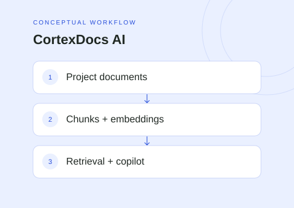

The idea
CortexDocs AI explores a practical question: how can a collection of project documents become easier to navigate and use? The desktop workspace combines file organization, previews, annotation, and a project-scoped AI copilot.
Project scope
- Organize documents inside projects and preview supported file types.
- Annotate PDFs and images, and edit text documents.
- Retrieve relevant document chunks for project-specific AI conversations.
- Refresh chunks and embeddings after document changes.
Technical approach
A Tauri and React desktop interface connects to an Express backend. PostgreSQL stores application data and pgvector supports similarity retrieval; R2-compatible storage holds document files. The retrieval workflow extracts content, creates chunks and embeddings, and supplies relevant context to the language model.
Scope & limitations
Document retrieval can provide relevant context, but does not guarantee accurate answers. This portfolio does not claim measured answer accuracy or production readiness. Running the full application requires its backend, database, storage, and model-provider configuration.